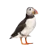

Animal Grimoire

PuffinsThe puffin is a bird of contradictions: clownish on land and clumsy in the air, yet a swift and graceful diver in the sea. Its vivid breeding plumage and stumbling manner have made it one of the most beloved and laughed-at birds in the northern world, while its associations with monks, witches, and Arthurian legend give it unexpected depth beneath the comedy.
Overview
Puffins belong to the family Alcidae and the genus Fratercula, a Latin name meaning "little brother," a direct reference to Irish folk belief that puffins are reincarnated monks. Three species exist: the Atlantic puffin, concentrated in Iceland and along northern Atlantic coasts; and the tufted and horned puffins, found along northern Pacific coasts. All three winter at sea, returning to land only to breed in colonies on rocky cliffs or in earthen burrows. The Atlantic puffin is the provincial bird of Newfoundland and Labrador.
Physical Description
The puffin is a stocky, compact seabird with a large head and short blunt wings adapted more for diving than sustained flight. Its most recognizable feature is its large triangular bill, which blazes with bright red, blue, and yellow during the summer breeding season. These colors come from plates that are shed after breeding, leaving the beak considerably duller through the winter. The puffin's body is black on the head and back with white cheeks, chest, and belly, and short legs ending in orange webbed feet. The tufted puffin differs with an all-black belly and distinctive yellow feather tufts sweeping back from above each eye. Puffins average fourteen inches in length with a twenty-three-inch wingspan and weigh approximately 1.5 pounds.
Folklore and Cultural Associations
Irish tradition holds that puffins are monks reborn, a belief so persistent it shaped the bird's scientific name. The puffin's upright posture, black-and-white coloring, and habit of gathering in colonies on remote Atlantic islands lent it an air of solemn community that made the comparison feel natural.
In Yorkshire, England, puffins carried associations with witches and witchcraft. Because they are gregarious birds, a lone puffin was considered an ill omen, and regional superstitions prescribed various remedies to avert the misfortune: killing the solitary bird, throwing a stone at it, making the sign of the cross, or removing a piece of clothing and putting it back on inside-out.
In the Middle Ages, the puffin occupied an ambiguous category. Scholars and church authorities could not agree whether it was a bird or a fish, and because it defied clean classification, eating it was forbidden during fasting periods. This taxonomic uncertainty reflects something genuine about the puffin: it truly belongs to two worlds, neither fully of the sea nor fully of the land or air.
Some versions of the Arthurian cycle suggest that King Arthur was transformed into a puffin at the end of his life, a variant on the more familiar crow or raven tradition. The puffin has also been nicknamed the sea parrot for the vivid color of its bill. Its meat, eggs, and hide were historically harvested across its range, and puffin meat remains a traditional food in Iceland.
Omens and Divinatory Meaning
The puffin's divinatory message centers on self-knowledge and confidence in your own element. It is easy to judge the puffin by how it looks on a clifftop or in a stumbling takeoff, but that judgment misses the point entirely. In the water, the puffin is transformed: swift, precise, and fully at home. A puffin sighting may be an invitation to stop measuring yourself by environments that are not yours. Where do you move with ease? What comes naturally to you that others might struggle with? The puffin asks you to locate that element and trust it.
Its awkwardness in unfamiliar conditions is not a flaw. It is the cost of being exceptionally adapted elsewhere. The cheerfulness with which puffins go about their ungainly business on land is worth noting. They do not appear to be ashamed of it. The puffin's message may include a prompt to release embarrassment about the domains where you are not at your best, and to keep moving toward the water.
For parents and caregivers, the puffin also carries a specific teaching. Both puffin parents invest fully in raising their chick, feeding it until it is fat and strong, and then they leave. The puffling must find its own way to the sea, alone. The puffin may be signaling that the work of preparation is done, and that continued hovering now hinders rather than helps.
Colors
Black, white, orange, yellow, blue